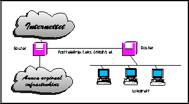

Et fast samband vil være basert på faste linjer fra Telenor. Mellom tilbyders infrastruktur og kundens nett knyttes telelinjen sammen med to såkalte rutere, slik figur 17 viser. Figuren viser det ikke, men i tillegg til de to ruterne vil det stå et modem mellom telelinjen og hver ruter. Dette er spesialmodemer som vanligvis levereres av Telenor som en del av et slikt fast linje abonnement.

Med en slik tilknytning er kunden et fullverdig medlem av Internettet og har altså en fast TCP/IP forbindelse døgnet rundt. Behovet for båndbredde vil avgjøre hvor rask rask linje kunden abonnerer på. Vanlige båndbredder kan være 19.2Kbps, 28.8 Kbps, 64 Kbps, 128 Kbps og 2Mbs.